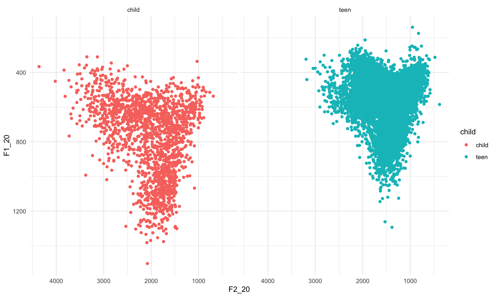
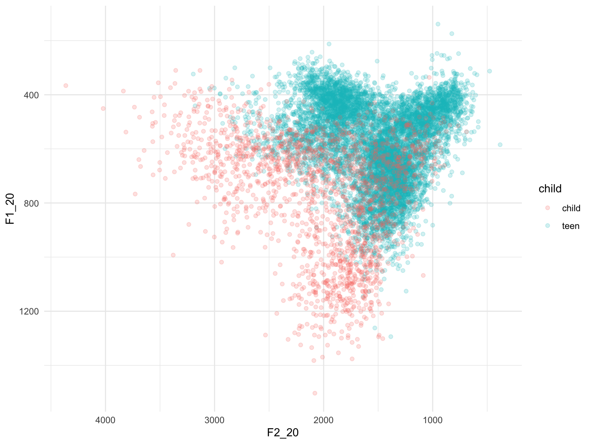
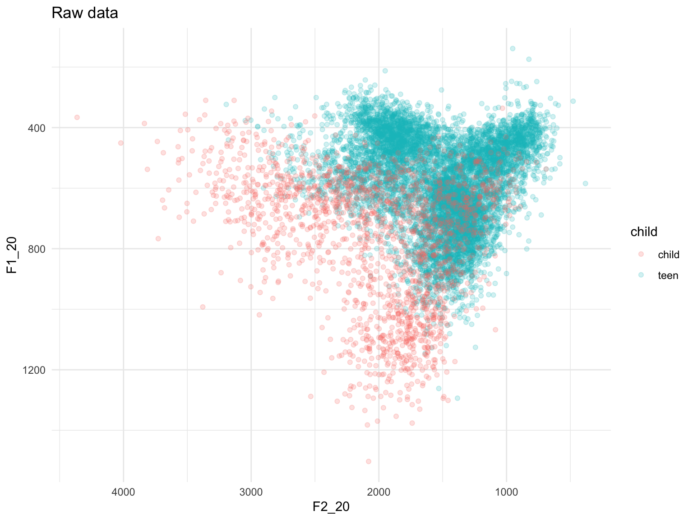
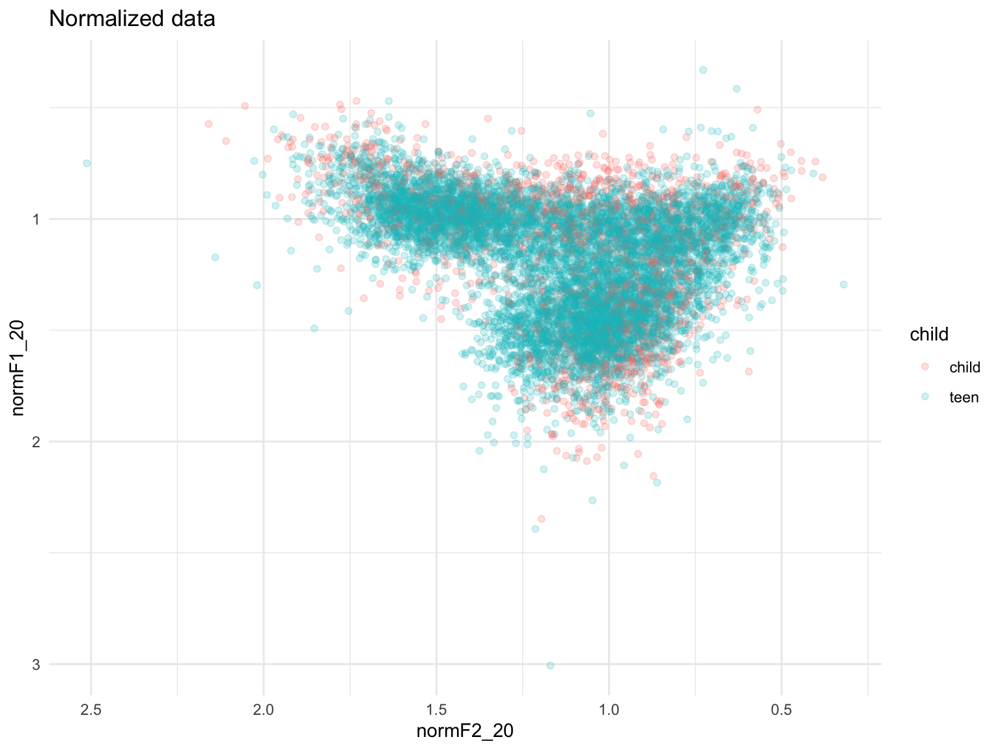

Today I will be normalizing my PhD data using the modified Watt Fabricius method (Fabricius, Watt & Johnson 2009).
First, load the tidyverse:
library(tidyverse)And the data:
data <- read.csv("alldata_oct24.csv", stringsAsFactors = T, head = T, row.names = 1)Comparing sociophonetic variation in different speakers’ vowels can be tricky if the speakers in question have very different vocal tract lengths. This is somewhat the case for adult females vs. adult males, and an even bigger problem when comparing vowels as spoken by a child with the same vowels spoken by an adult. This is because in acoustic phonetics, we measure vowels in terms of resonances in the vocal tract - and these resonances are of course dependent on the shape of each individual’s vocal tract. You can see this issue when we compare the plots below.
ggplot(data, aes(x=F2_20, y=F1_20))+geom_point(aes(color=child))+scale_x_reverse()+scale_y_reverse()+facet_grid(~child)+theme_minimal()## Warning: Removed 1 rows containing missing values (geom_point).
You can see that in the plot on the left, i.e. the child data, the scattered vowel tokens take up a larger space. This effect is perhaps clearer if we layer the data:
ggplot(data, aes(x=F2_20, y=F1_20))+geom_point(aes(color=child), alpha=0.2)+scale_x_reverse()+scale_y_reverse()+theme_minimal()## Warning: Removed 1 rows containing missing values (geom_point).
The children have higher F1 and F2 values in their vowels than the adolescents because the children tend to have higher fundamental frequency (F0) or voice pitch than the adolescents - kind of like comparing a piccolo and a normal flute! As formants are just amplifications of sets of harmonics in the voice, and harmonics are multiples of F0, children’s formants have higher Hz values than adolescents’.
To combat this, and allow us to compare children and adolescents’ vowel productions in a meaningful way, we normalise. The modified Watt-Fabricius method allows us to normalise away the differences caused by physiological differences between children and adults, or men and women, whilst preserving potentially meaningful dialectal and sociolinguistic variation.
Check the structure of the data:
str(data)## 'data.frame': 9303 obs. of 24 variables:
## $ sound_label : Factor w/ 7 levels "face","fleece",..: 4 1 4 4 1 6 2 6 1 4 ...
## $ sound_start : num 4.82 14.6 58.8 59.31 78.93 ...
## $ sound_end : num 4.89 14.68 58.94 59.41 79.05 ...
## $ word : Factor w/ 918 levels " TYPE","((ALLAI))",..: 913 503 527 298 510 623 708 434 693 747 ...
## $ F1_20 : num 549 644 732 560 572 ...
## $ F1_35 : num 553 658 748 626 564 ...
## $ F1_50 : num 565 645 708 608 537 ...
## $ F1_65 : num 575 619 669 592 476 ...
## $ F1_80 : num 593 608 654 580 418 ...
## $ F2_20 : num 1548 2081 1598 1943 2410 ...
## $ F2_35 : num 1558 2116 1522 1819 2434 ...
## $ F2_50 : num 1567 2241 1442 1844 2532 ...
## $ F2_65 : num 1599 2263 1398 1854 2594 ...
## $ F2_80 : num 1589 2118 1404 1830 2692 ...
## $ participant : Factor w/ 35 levels "Ali","Amanda",..: 19 19 19 19 19 19 19 19 19 19 ...
## $ duration : num 0.0679 0.079 0.147 0.1012 0.119 ...
## $ changeF2 : num 41.1 37.3 -193.9 -113.1 281.8 ...
## $ changeF1 : num 44.1 -36.2 -77.4 20.7 -153.8 ...
## $ trajectory : num 60.2 52 208.8 114.9 321.1 ...
## $ gender : Factor w/ 2 levels "F","M": 1 1 1 1 1 1 1 1 1 1 ...
## $ changeF1norm: num 649 -459 -527 204 -1293 ...
## $ changeF2norm: num 605 473 -1319 -1117 2368 ...
## $ traj_norm : num 888 659 1420 1135 2698 ...
## $ child : Factor w/ 2 levels "child","teen": 2 2 2 2 2 2 2 2 2 2 ...It looks fine – phew!
The modified Watt-Fabricius method works as follows:
As I am dealing with diphthongs, I took measurements of F1 and F2 at five different time points across each vowel token. However, while this is a great way to look at diphthongs, for monophthongs, we assume that the F1 and F2 frequencies do not change over time. Therefore, I will create two new variables in the dataset, where each is an average of F_n across that vowel token.
data <- data %>% mutate(meanF1 = (F1_20+F1_35+F1_50+F1_65+F1_80)/5,
meanF2 = (F2_20+F2_35+F2_50+F2_65+F2_80)/5)This is going to be a bit complicated, so bear with me.
First, we will select the rows of the dataframe that represent tokens of FLEECE; we group this subset by participant; summarise to get the mean F1 and F2, and store this information in a tibble called fleece_means. Then repeat the process to get the mean F1 of TRAP by participant.
We do this using the “meanF1” and “meanF2” variables that we created in the step above.
fleece_means <- data %>% filter(sound_label == "fleece") %>%
group_by(participant) %>%
summarise(meanFleeceF1 = mean(meanF1),
meanFleeceF2 = mean(meanF2))## `summarise()` ungrouping output (override with `.groups` argument)trap_means <- data %>% filter(sound_label == "trap") %>%
group_by(participant) %>%
summarise(meanTRAPF1 = mean(meanF1))## `summarise()` ungrouping output (override with `.groups` argument)Now we merge these two tibbles:
newdata <- merge(fleece_means, trap_means)Then create the hypothetical /u/, which actually just recycles the mean F1 for FLEECE that we found earlier, using them as proxies for both the F1 and F2 of this close back vowel:
newdata <- newdata %>% mutate(u_F1 = meanFleeceF1,
u_F2 = meanFleeceF1)Then the F2 of TRAP should be halfway between the F2 of /u/ (which, as you remember, is actually the F1 of FLEECE) and the F2 of FLEECE.
newdata <- newdata %>%
mutate(trapF2 = ((meanFleeceF2 - u_F2)/2) + u_F2)Now it’s time to calculate the Grand Mean for each formant, which gets abbreviated to S. To get the grand mean, calculate the mean F1 and mean F2 by summing the F_n values for TRAP, FLEECE and /u/ and dividing by 3; store these values in the vectors ‘s_formant1’ and ‘s_formant2’.
newdata <- newdata %>%
mutate(S_F1 = (meanFleeceF1 + meanTRAPF1 + u_F1)/3,
S_F2 = (meanFleeceF2 + trapF2 + u_F2)/3)Now merge the dataframes:
dataX <- merge(data, newdata)
str(dataX)## 'data.frame': 9303 obs. of 34 variables:
## $ participant : Factor w/ 35 levels "Ali","Amanda",..: 1 1 1 1 1 1 1 1 1 1 ...
## $ sound_label : Factor w/ 7 levels "face","fleece",..: 4 6 4 1 1 7 4 1 4 1 ...
## $ sound_start : num 153 154 213 225 230 ...
## $ sound_end : num 153 154 213 225 231 ...
## $ word : Factor w/ 918 levels " TYPE","((ALLAI))",..: 315 434 200 328 388 653 747 21 22 217 ...
## $ F1_20 : num 527 709 486 485 539 ...
## $ F1_35 : num 482 769 497 442 490 ...
## $ F1_50 : num 546 795 472 441 465 ...
## $ F1_65 : num 491 798 528 425 572 ...
## $ F1_80 : num 507 798 596 380 608 ...
## $ F2_20 : num 1318 1435 1516 2213 2087 ...
## $ F2_35 : num 1314 1415 1479 2076 2185 ...
## $ F2_50 : num 1428 1400 1428 2232 2219 ...
## $ F2_65 : num 1470 1389 1484 2220 2270 ...
## $ F2_80 : num 1461 1327 1418 2283 2316 ...
## $ duration : num 0.0823 0.064 0.0931 0.0838 0.123 ...
## $ changeF2 : num 143.7 -108.5 -97.9 69.3 228.4 ...
## $ changeF1 : num -20.4 89.3 110.3 -104.9 68.6 ...
## $ trajectory : num 145 141 147 126 238 ...
## $ gender : Factor w/ 2 levels "F","M": 2 2 2 2 2 2 2 2 2 2 ...
## $ changeF1norm: num -248 1395 1185 -1251 558 ...
## $ changeF2norm: num 1746 -1694 -1051 827 1857 ...
## $ traj_norm : num 1764 2194 1584 1500 1939 ...
## $ child : Factor w/ 2 levels "child","teen": 2 2 2 2 2 2 2 2 2 2 ...
## $ meanF1 : num 510 774 516 435 535 ...
## $ meanF2 : num 1398 1393 1465 2205 2215 ...
## $ meanFleeceF1: num 375 375 375 375 375 ...
## $ meanFleeceF2: num 2128 2128 2128 2128 2128 ...
## $ meanTRAPF1 : num 706 706 706 706 706 ...
## $ u_F1 : num 375 375 375 375 375 ...
## $ u_F2 : num 375 375 375 375 375 ...
## $ trapF2 : num 1252 1252 1252 1252 1252 ...
## $ S_F1 : num 485 485 485 485 485 ...
## $ S_F2 : num 1252 1252 1252 1252 1252 ...Final step: we divide every F_n observation by S_n.
dataX <- dataX %>% mutate(
normF1_20 = F1_20/S_F1,
normF1_35 = F1_35/S_F1,
normF1_50 = F1_50/S_F1,
normF1_65 = F1_65/S_F1,
normF1_80 = F1_80/S_F1,
normF2_20 = F2_20/S_F2,
normF2_35 = F2_35/S_F2,
normF2_50 = F2_50/S_F2,
normF2_65 = F2_65/S_F2,
normF2_80 = F2_80/S_F2)We can now plot the normalized data, and compare it with the plot we produced earlier. This is out unnormalized data:
ggplot(data, aes(x=F2_20, y=F1_20))+geom_point(aes(color=child), alpha=0.2)+scale_x_reverse()+scale_y_reverse()+theme_minimal()+ggtitle("Raw data")## Warning: Removed 1 rows containing missing values (geom_point).
… but this is what the normalized data look like:
ggplot(dataX, aes(x=normF2_20, y=normF1_20))+geom_point(aes(color=child), alpha=0.2)+scale_x_reverse()+scale_y_reverse()+theme_minimal()+ggtitle("Normalized data")## Warning: Removed 1 rows containing missing values (geom_point).
Mission accomplished! In this final plot, you can see that in the normalized data, the space covered by the children’s vowels more or less exactly maps onto the space covered by the adolescents’ vowels.